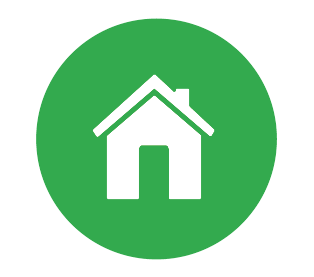
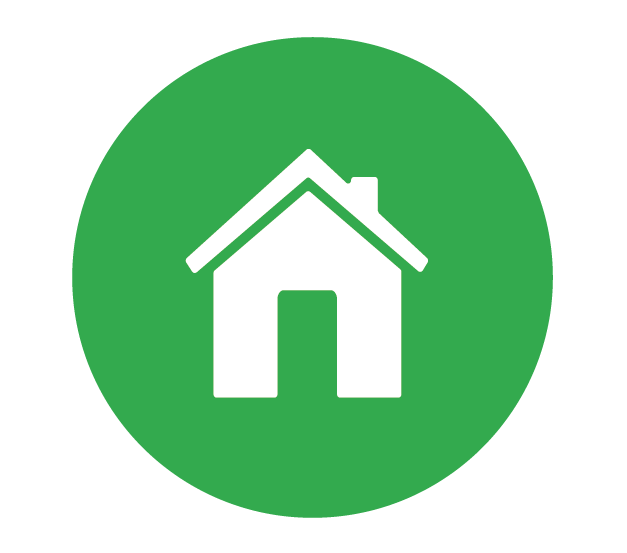

Tutto si crea, nulla si distrugge
Non scartiamoli
Puoi riutilizzare in cucina i sacchetti del pane per assorbire l'unto delle tue fritture; la carta dei quotidiani può servire per pulire specchi e vetri; puoi usare il retro di un foglio che non ti serve più per prendere appunti.
Mettiamoci una pezza
Da vecchie camicie puoi ricavare stracci per pulire; pezze di lana ricavate da vecchie maglie sono ottime per lucidare l'argenteria.
Non buttare la pasta
È avanzato un piatto di spaghetti? Puoi trasformarlo in una torta salata, una frittata, un timballo. Aggiungi qualche ingrediente e la magia è fatta!
Soluzione
Mobili = monili; libro = libero; abiti = ; vestiti = visetti; bambola = bombola; maccheroni =
marocchine.
 
